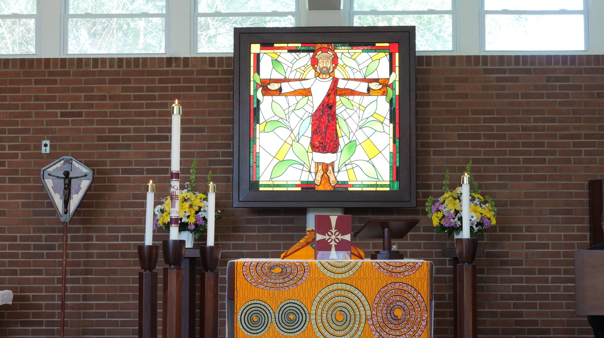
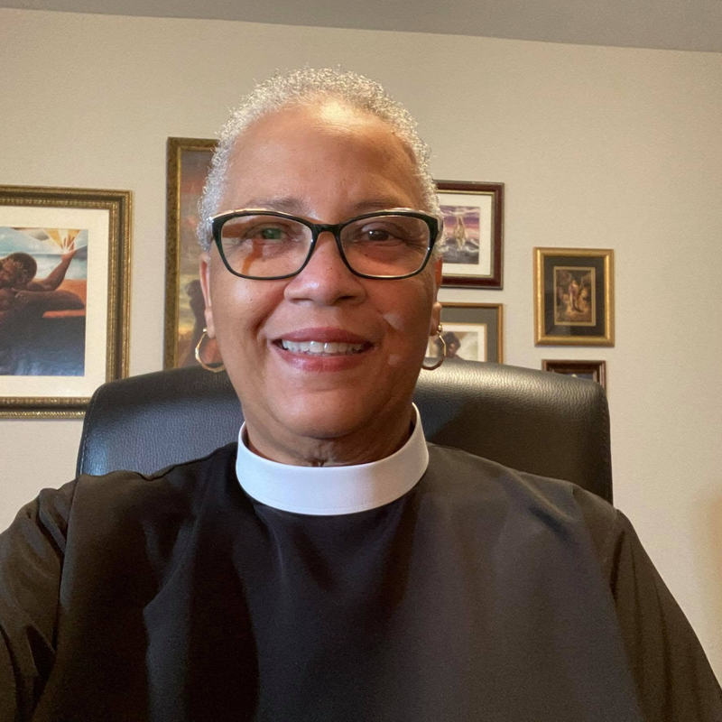

Two historic congregations, one faithful community, rooted in the story of the Black church in St. Louis and open to all who seek God's light.
We are a Christ-centered historic African American Episcopal congregation called to embody God's love through inspiring worship, deep relationships, and faithful service. Rooted in the richness of our heritage and sustained by the Spirit, we foster a welcoming community where all are seen, valued, and connected. We commit ourselves to being Love in action: serving our neighbors, enriching one another, proclaiming the Good News with joy, justice, peace, and hope.
A welcoming community of faith…
Rooted in heritage. Formed in love. Sent to serve.
Rooted. Formed. Sent.
All Saints is the oldest African American Episcopal church west of the Mississippi River. It began as a Sunday school in 1874 and soon became a mission. In 1883 it welcomed its first ordained priest as rector and became All Saints Episcopal Church.
As the city grew, the parish relocated several times, for years worshiping in "the old church" at Garrison and Locust, then moving to Kingshighway and Terry Avenue in 1957. In 2016, the parish moved to Northwoods in preparation for its merger with the Church of Ascension.
Ascension began in 1887 from a small living-room gathering on Cabanne Avenue near Goodfellow. By 1927 the parish boasted 500 members. After decades of change, Ascension members found a new home, holding their first service at the current Northwoods location on February 8, 2004.
Today, All Saints and Ascension worship as one, carrying forward a legacy of faith, dignity, and service in North County St. Louis.


Our parish is led by our Rector, The Rev. Renee Fenner, who guides our worship, pastoral care, and mission in the community. We are part of the Episcopal Diocese of Missouri under the leadership of Bishop Deon Johnson.
Reach the Office →Faith lived out in worship, fellowship, and care for our neighbors. There's a place here for your gifts.
Each month we provide free groceries to families across North County, one of our most vital ministries. Volunteers are always welcome to help sort, pack, and distribute.
Our choir leads Sunday worship, singing from The Hymnal 1982, the LEVAS African American hymnal, and "Lift Up Your Hearts." New voices are always welcome.
Open to children ages 7–14, no experience necessary. Rehearsals are Thursdays 6:00–6:30 PM, and the choir sings at services about once a month.
Weekly piano lessons offered free of charge to children ages 8–13, with a portable keyboard loaned to each child for daily practice at home.
The women of the parish gather for fellowship, service, and to support the ministries and mission of the church and wider community.
The men of the parish come together in fellowship and service, supporting the life of the congregation and events throughout the year.
Worship leaders, lectors, acolytes, and ushers help our services run with reverence and warmth, a meaningful way to serve on Sunday.
Living out the Gospel call to justice and mercy, this ministry engages the needs of our neighborhood and advocates for our North County community.
Our Episcopal communal garden grows fresh food and fellowship, connecting the parish with neighbors and nourishing the community.
Whatever you love to do, there's a way to serve here.
Contact the Office →We are an Episcopal community of creed, ritual, prayer, and service. As worshiping Christians we seek to enrich our relationship with God and to create an open, caring, and learning community: a spiritual family in Christ. We reach out with God's love to our neighbors, to the Diocese of Missouri, and to the worldwide church family.
Learn About the Episcopal Church →Our vestry, the elected lay leaders of the parish, works alongside our Rector to steward the life, ministries, and resources of All Saints and Ascension. Current members are listed in our bulletin and newsletter.